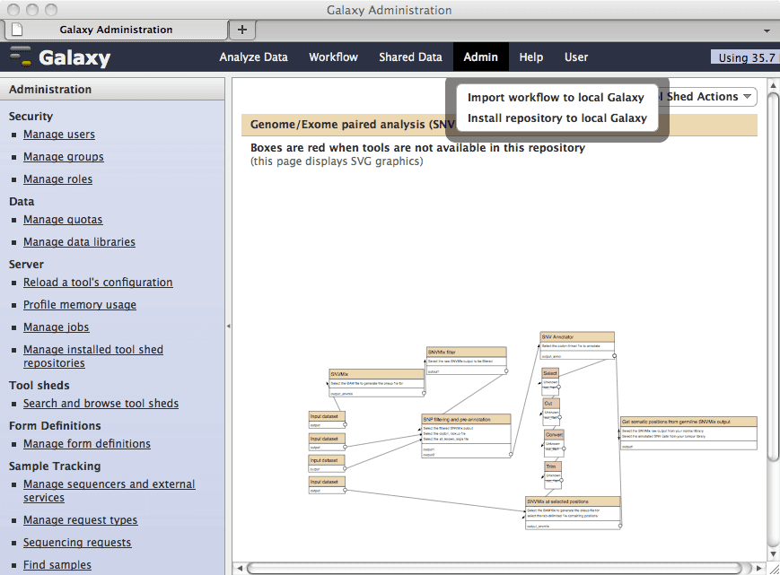

Workflows in Galaxy
What are Workflows?
Workflows in Galaxy allow you to chain multiple tools together into an automated pipeline. Instead of running each analysis step manually, you can create a workflow that runs all steps automatically.

Galaxy workflow editor showing connected analysis tools
Benefits of Workflows
- Reproducibility: Run the exact same analysis multiple times
- Efficiency: Process multiple datasets with one click
- Sharing: Share your analysis pipeline with collaborators
- Documentation: Workflows serve as documentation of your methods
Creating a Workflow
Option 1: Extract from History
After performing an analysis manually, you can extract it as a workflow from your history
Option 2: Workflow Editor
Build a workflow from scratch using the graphical workflow editor
Option 3: Import Shared Workflow
Import workflows shared by the community or published with papers
Using Collections with Workflows
Workflows become even more powerful when combined with collections. You can run a workflow on an entire collection of paired reads, processing all samples in parallel.
Best Practices
- Test your workflow on a small dataset first
- Add annotations to explain each step
- Set appropriate tool versions for reproducibility
- Publish your workflow when sharing results